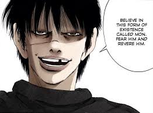
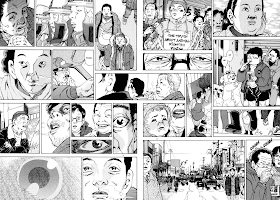
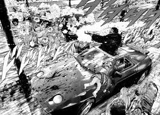
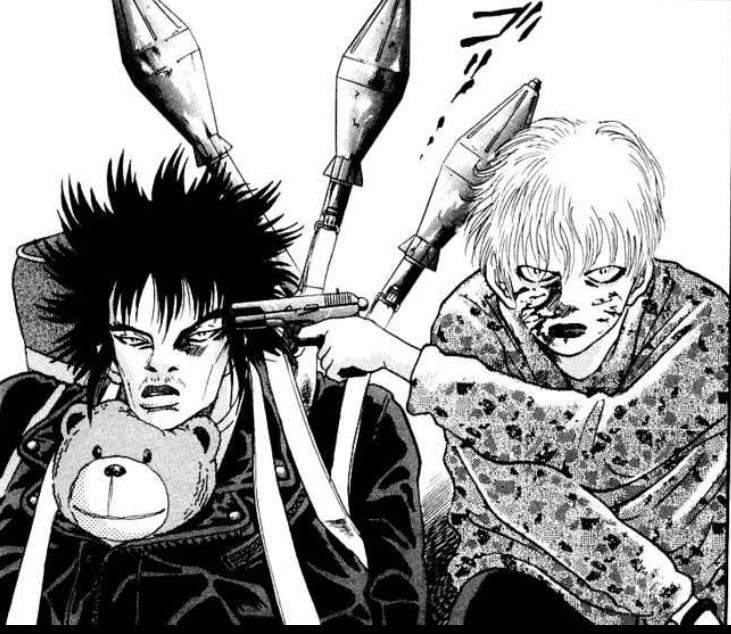

O Poder e Suas Manifestações
Em "The World Is Mine", Hideki Arai explora as complexas dinâmicas do poder através da jornada de Mon, um personagem que representa a busca desenfreada pelo controle absoluto. A obra demonstra como o poder pode corromper e transformar indivíduos, levando-os a extremos impensáveis.
Crítica Social
A obra apresenta uma crítica mordaz à sociedade japonesa contemporânea, explorando temas como desigualdade social, alienação urbana e a pressão do conformismo. Através de suas páginas, Arai expõe as fraturas de uma sociedade aparentemente ordenada.
A Violência como Linguagem
A violência no manga não é gratuita, mas sim um meio de comunicação que expressa as frustrações e desejos reprimidos dos personagens. Cada ato violento carrega um significado mais profundo sobre a condição humana.
A Natureza Humana
Arai mergulha profundamente na psicologia humana, explorando os limites entre civilização e selvageria, questionando o que nos torna verdadeiramente humanos em situações extremas.
